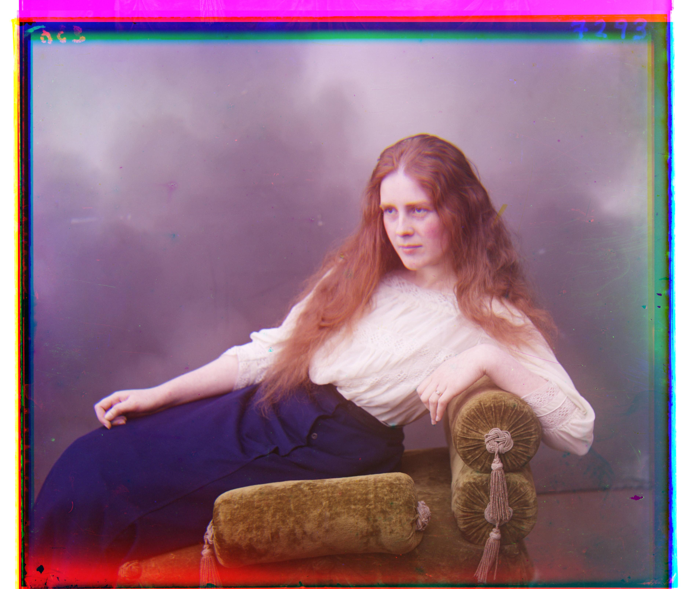
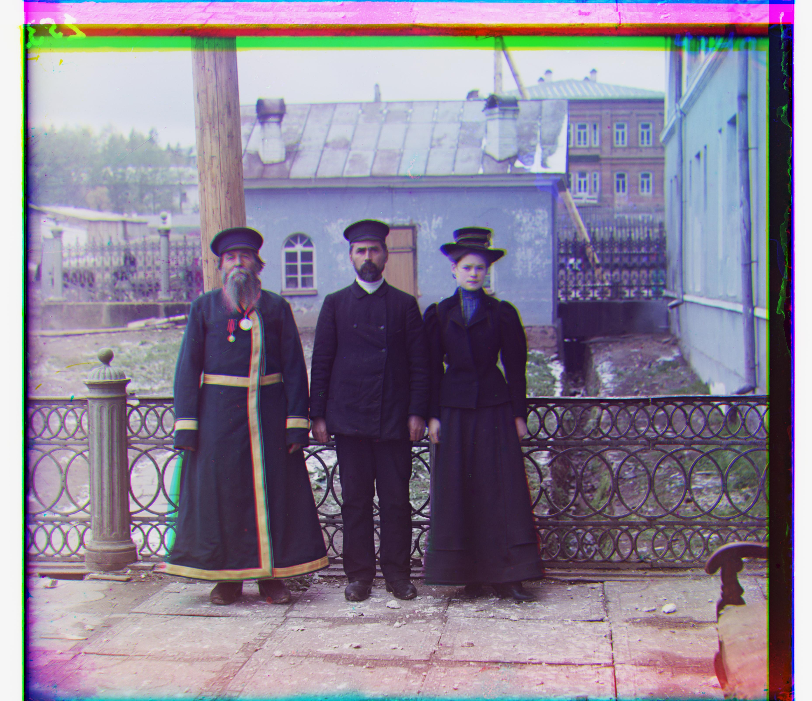

CS180 Project 1
|
Rishi Nath 2024
|
Approach
Without Recursion
First, I will explain my approach without the recursive component.
For each image, we take the separate red, green, and blue (r, g, b) channels, and disregard the outer 30% of the images for alignment (cropping).
The principled motivation for this is that the borders on the given image set are artifacts that shouldn't be used for alignment.
In practice, I found that croppings less than this amount led to issues with aligning some images properly, like emir.tif.
On the cropped images, we perform edge detection using Robert's cross
using skimage.filters.roberts.
This is motivated by the idea that we are just aligning features, which should have similar edge shapes in every color channel, but not necessarily similar interiors in every color channel.
|
cathedral.jpg - blue channel
|
after edge detection
|
Then, we align the green and red channels with the blue channel separately. To do this, we test every possible pixel offset in the range [-32, +32] for both the x and y directions.
We evaulate the goodness with Normalized Cross-Correlation (NCC) - higher NCC is better. We find the offsets with the highest NCC.
Then, we apply the offsets to the uncropped channels and compose the final image.
With Recursion
To handle larger images, I implemented a recursive image pyramid with downscaling.
We recursively downscale the image by a factor of 2 until it is smaller than 512x512 pixels. Imagine each recursive downscale as a "level" on the pyramid.
Then, we use the above algorithm to find the best offsets for the downscaled image.
We apply these offsets (which have to be re-scaled up) to the "level" above, and then repeat the above algorithm now on that.
Etc., etc., recursively "summing" all the previously found offsets, until we return to the top "level" of the pyramid.
There is one more optimization I chose to employ - the range [-d, +d] for each level is chosen such that it doubles each level going down the pyramid,
ending at [-32, +32] when the image is smaller than 512x512 pixels. This keeps the work constant at every level of the pyramid, as the alignment step is for a single level is
O(n^2 * d^2), where n is the side length of the image and d is the range. So, by halving d each time we double n (or equivalently, doubling d every time we halve n), we keep the work constant.
In practice, on my laptop, each level takes ~5 seconds.
Example Results
These are the results of the above algorithm performed on every image in the given data folder.
The shifts are documented in the format ${channel color}: [${x shift}, ${y shift}].
"g" indicates the green channel, while "r" indicates the red channel.
There is no shift in the blue channel. The green and red channels are shifted relative to the blue channel.

Cathedral
g: [+5, +2]
r: [+12, +3]
|

Church
g: [+25, +4]
r: [+58, -4]
|

Emir
g: [+49, +24]
r: [+107, +40]
|
Harvesters
g: [+60, +17]
r: [+124, +13]
|

Icon
g: [+42, +17]
r: [+90, +23]
|
|

Lady
g: [+57, +9]
r: [+120, +13]
|

Melons
g: [+80, +10]
r: [+177, +13]
|

Monastery
g: [-3, +2]
r: [+3, +2]
|
Onion Church
g: [+52, +25]
r: [+107, +35]
|

Sculpture
g: [+33, -11]
r: [+140, -27]
|
|
Self Portrait
g: [+78, +29]
r: [+175, +36]
|

Three Generations
g: [+54, +12]
r: [+111, +8]
|

Tobolsk
g: [+3, +2]
r: [+6, +3]
|
Train
g: [+42, +2]
r: [+86, +29]
|
|
Selected Results
These are the results on some images I personally selected from the Prokudin-Gorskii collection.
|
Etruscan Vase
g: [+24, -2]
r: [+113, -2]
|
Isfandiyar
g: [+38, +9]
r: [+95, -10]
|
"Little Russia"
g: [-23, 9]
r: [-34, 11]
|